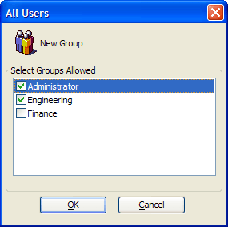

All Users Dialog
The All Users dialog allows you to create new user groups and define the groups that are allowed to log in.

To create a new group, click New Group, enter its name, and click OK.
To allow a member of a group to login, place a checkmark next to its name.
Limitations
Web publishing applications only.
See Also